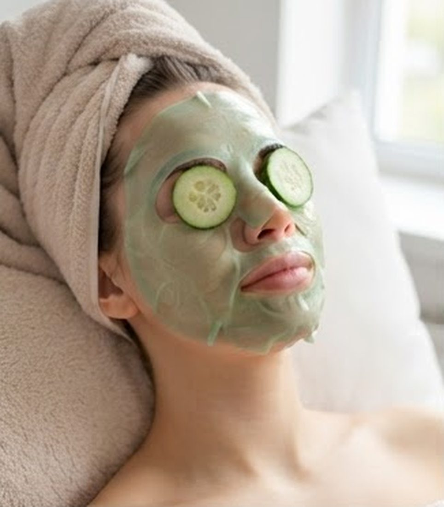
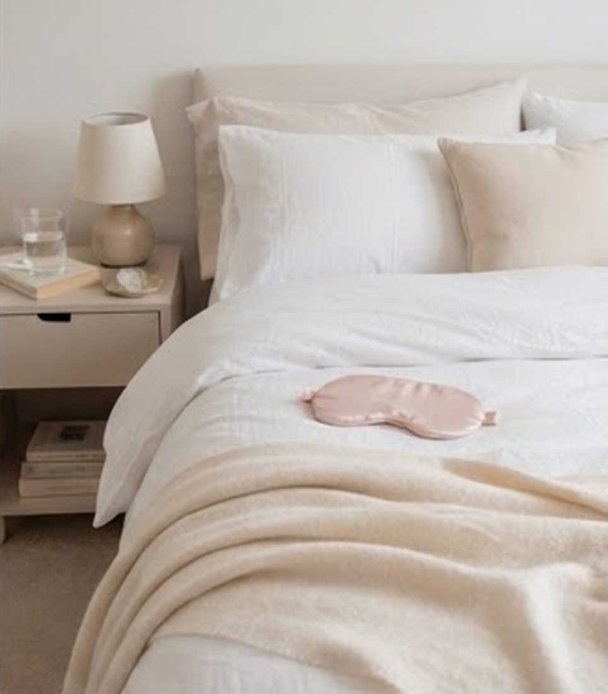

Small habits

Keep a bottle on your desk and drink a glass after waking up. Small sips through the day add up.
Jot down one thing you are grateful for, one goal for the day and one thing you will let go of.

A short walk or stretch between classes. Moving a little every day is easier to keep than a big plan.

Wash your face morning and night and wear sunscreen in the day. It is a small ritual that also tells your body it is time to reset.

Dim the lights, keep your phone away for the last 30 minutes and go to bed at about the same time each night.
This is general wellness information, not medical advice. If you are struggling with sleep or your mood for a long time, please speak to a doctor or counsellor.